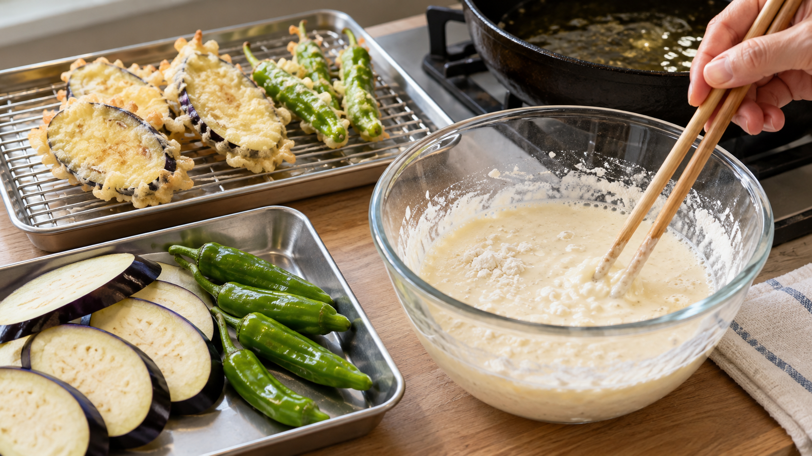

天ぷら衣は冷たく、混ぜすぎない｜粘りと水蒸気
家で天ぷらを揚げると、衣が厚く、重たい歯ざわりになることがある。「冷たい水で作って、混ぜすぎない」と聞くけれど、なぜそれで変わるのだろう。
結論は、薄力粉をぬるくない水でさっと合わせ、衣を作ったらすぐに揚げること。 ねばりを抑えると食材に衣が厚く付きすぎず、揚げるときに水分が抜けやすい。ただし、水は冷たければ冷たいほどよいわけではない。
衣が重くなるのはなぜ？
小麦粉に水を加えて練ると、たんぱく質がつながり、弾力のある網のようなものができる。これをグルテンと呼ぶ。パンには役立つ粘りだが、天ぷら衣では強くなると衣がぽってりと付きやすい。
揚げている間には、衣の水分が熱で水蒸気になって外へ出ていく。水分がどう抜けるかも、歯ざわりに関わる。粉の種類を変えた揚げ衣の研究では、水分がよく蒸発した衣ほどサクサク感の評価が高かった。これは冷水と熱い油の「温度差だけ」が食感を決めたという結果ではない。
研究で確かめたこと、家庭で使えること
水温を変えた天ぷら衣の研究では、ぬるい水を使うと衣の粘りと食材への付着が増え、からりと揚がりにくくなった。一方、極端に冷たい水でも成績はよくなく、調べた条件では15℃ほどが良好だった。たんぱく質の少ない粉のほうが衣に向いていた。
別の天ぷらの研究でも、強くかき混ぜると仕上がりが悪くなると報告されている。農林水産省の解説は、小麦粉の衣は水を加えてから時間がたつと粘りが増すため、多少粉のかたまりが残っても速やかに揚げるよう勧めている。
ここから家庭で使うなら、水道水がぬるい日は冷蔵庫で冷やした水を用意し、油を温めてから少量の衣を作るのがよさそうだ。水温を厳密に測ったり、混ぜる回数を数えたりする必要はない。粉を完全に溶かそうと練り続けないことが大切になる。
今夜の野菜天ぷら
2人分の材料は、なす1本、ししとう4本、薄力粉60g、冷水90mL、揚げ油を用意する。分量は家庭で作るための目安で、研究がこの配合を最適と確かめたわけではない。
- なすを薄切りにして表面の水気をふく。ししとうには、揚げるときの破裂を防ぐため小さな穴を開ける。
- 鍋の油を170℃前後に温める。野菜を揚げる温度の目安は農林水産省の案内に沿う。
- 油が温まったら、薄力粉と冷水を箸でさっと合わせる。粉が少し残るところで止め、すぐに食材へ薄く付ける。
- 油面の半分を超えない量を一度に入れて揚げる。泡が落ち着き、衣が軽くなったら引き上げる。揚げ時間は切った厚みで変わるので、衣と食材の状態を見て決める。網にのせて油を切る。
粉を選ぶときにも使える
小麦粉の粘りを抑える考え方は、別の粉を選ぶときにも役立つ。農林水産省の米粉料理の解説によると、米粉には小麦粉のような粘りの網ができず、衣づくりで特に冷水を必要としない。米粉を使うなら、その粉に合う水の量をレシピで確かめよう。
まとめ
天ぷら衣は、油を温めてから冷水で少量作り、粉が少し残る程度に混ぜてすぐ揚げる。冷やしすぎや混ぜる回数に気を取られるより、衣を練らず、鍋に詰め込まないことから始めよう。